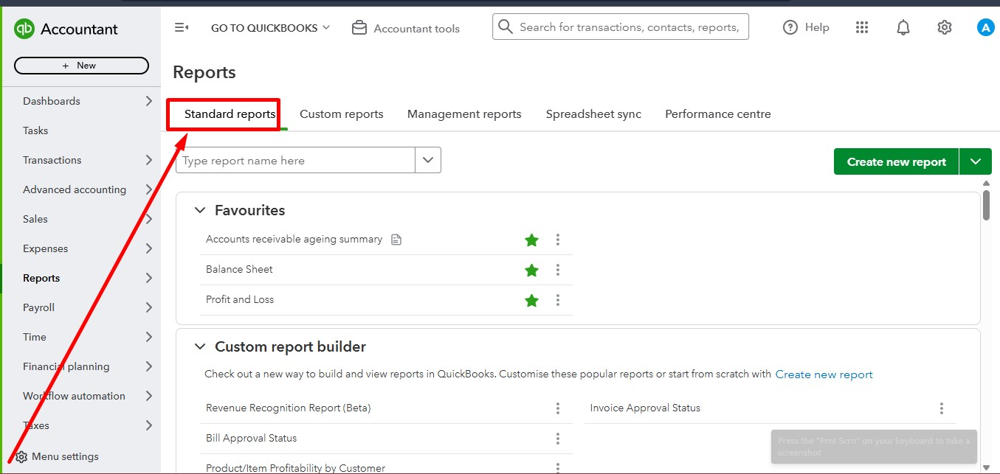
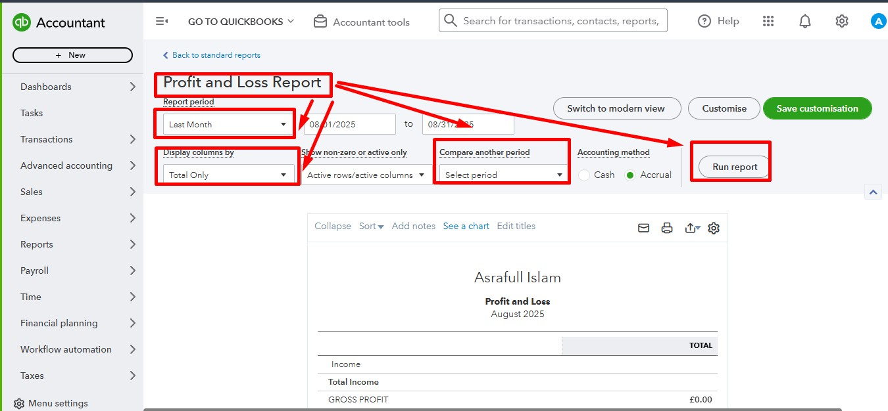
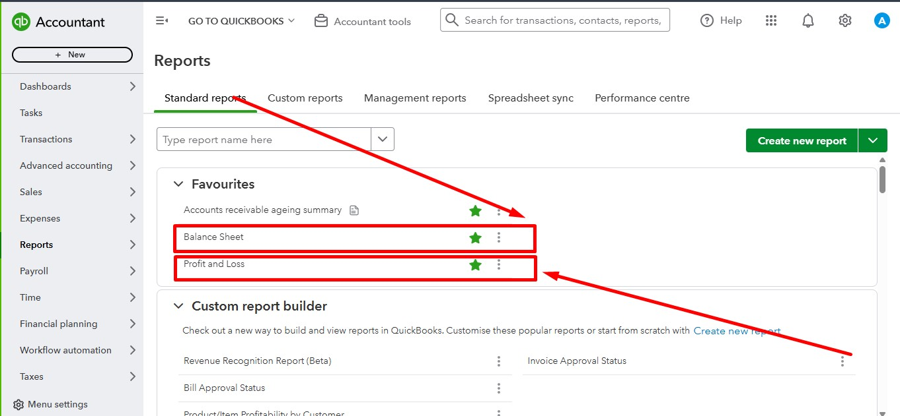
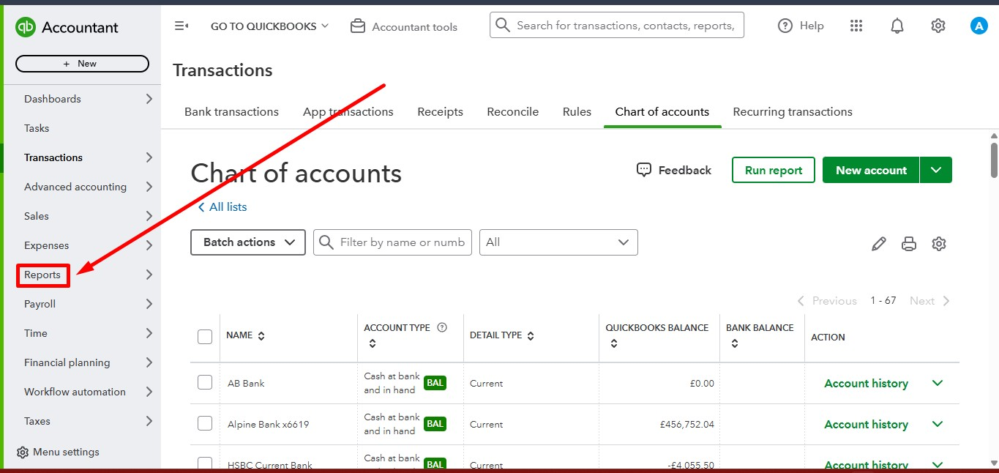

Professional QuickBooks Online Financial Reporting including Profit & Loss Report, Balance Sheet Report, Report Customization, Standard Reports and Financial Analysis.
This project demonstrates the complete QuickBooks Online Financial Reporting workflow. It includes generating Profit & Loss reports, Balance Sheet reports, selecting reporting periods, customizing reports, and reviewing financial performance for business decision making.



